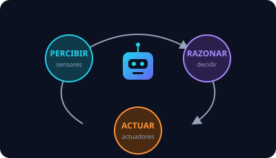
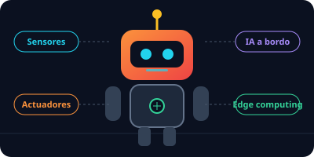
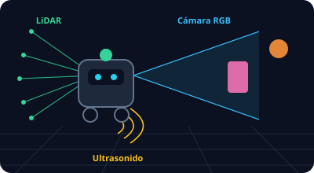
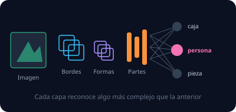
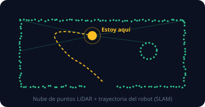
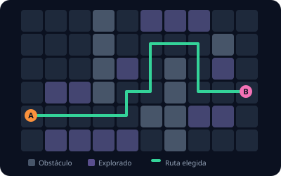
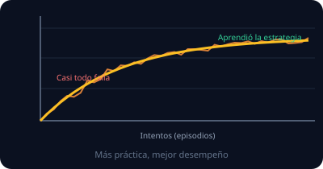
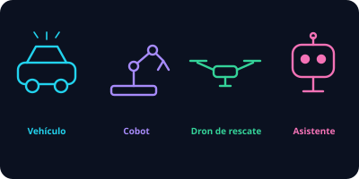

← VolverRobótica inteligente: percibir, razonar y actuarPortada
Revista IA · Robótica
Robótica inteligente: percibir, razonar y actuar
Por: Jazmín Acatitlan San Juan · Antonio Florencio García Estrada · Roberto Martínez García · Emmanuel Rubio Sánchez · Ximena Toledo Méndez
Noviembre 2026 · RobóticaLa revista se abrirá…
Introducción
De robot programado a robot autónomo

Un robot autónomo repite sin parar el ciclo percibir → razonar → actuar.
Robot tradicionalRepite instrucciones fijas en un entorno controlado.
Robot autónomoDecide por sí mismo aunque el entorno cambie.
Introducción
La IA como adaptabilidad
La inteligencia artificial cambia la programación rígida («si pasa A, haz B») por comportamiento adaptable: el robot generaliza a situaciones que nadie escribió de antemano.
El gran reto: la incertidumbre. La luz cambia, los sensores fallan, las personas se mueven. Un sistema inteligente debe decidir bien aunque no lo sepa todo.
RuidoImprevistosInformación incompleta
Introducción
Hardware y software

Procesadores dedicados en el borde (edge computing) permiten reaccionar en milisegundos, sin depender de la nube.
Una arquitectura de software global conecta percepción, decisión y control, como un sistema nervioso.
Percepción y sensores
Los «ojos y oídos» del robot

La fusión de sensores combina varios para compensar las debilidades de cada uno.
LiDAR: mide distancias con láser.
Cámaras RGB: aportan color y textura.
Ultrasonido: detecta obstáculos cercanos.
Percepción y sensores
Visión por computadora

Las redes neuronales convolucionales (CNN) aprenden por capas: de bordes a objetos completos.
Así un robot distingue una persona de una caja, o una pieza defectuosa de una correcta.
Percepción y sensores
SLAM y nubes de puntos

SLAM responde a la vez: ¿cómo es este lugar? y ¿dónde estoy yo? Los datos llegan como nubes de puntos: millones de coordenadas 3D.
Decisión y planificación
Planificar una trayectoria

A* explora primero los caminos más prometedores y evita obstáculos. Si aparecen nuevos, recalcula la ruta.
Decisión y planificación
Razonar con incertidumbre
Las reglas fijas fallan ante lo imprevisto. El razonamiento probabilístico asigna grados de confianza y actúa con prudencia según ellos.
85 %persona
10 %objeto
5 %sombra
Interacción humano-robot (HRI)
Con lenguaje natural y gestos, las personas dan instrucciones sin escribir código.
Decisión y planificación
¿Cómo «piensa» antes de moverse?
InterpretaEvalúa opcionesEligeMueve el actuador
El razonamiento lógico solo cuenta si termina en una ejecución motriz precisa: pensar y mover forman una misma cadena.
Aprendizaje y adaptación
Aprender por refuerzo

Por prueba y error (Reinforcement Learning): recompensa si acierta, penalización si falla. Tras miles de intentos, descubre la mejor estrategia.
Aprendizaje y adaptación
Imitar y mejorar
Aprendizaje imitativoUna persona muestra la tarea y el robot la reproduce (Learning from Demonstration).
Mejora continuaCon la experiencia optimiza tareas repetitivas: más rapidez y precisión.
Así adquiere destrezas complejas, como manipular objetos delicados, que serían difíciles de programar a mano.
Aprendizaje y adaptación
Anticipar fallas
El mantenimiento predictivo analiza vibración, temperatura y consumo para detectar desgaste antes de que ocurra la falla.
AutomatizadoRepite lo programado.
InteligenteAprende y se adapta cuando las condiciones cambian.
Aplicaciones
Casos de uso reales

Vehículos autónomosLiDAR, cámaras y planificación entre tráfico y peatones.
Cobots industrialesTrabajan junto a operarios de forma segura.
Drones de rescateExploran zonas de desastre y localizan personas.
Asistentes de servicioGuían y entregan en hospitales y hoteles.
Retos éticos y de seguridad
No todo es técnico
Seguridad físicaUn robot que falla puede causar daño real.
Responsabilidad¿Quién responde ante un error?
PrivacidadCámaras y sensores recogen datos de las personas.
EmpleoLa automatización transforma el trabajo.
Un robot puede ser técnicamente capaz y aun así no ser confiable.
Reflexión final
El futuro de la robótica
La robótica inteligente se resume en un ciclo: percibir, razonar y actuar. Percepción, decisión y aprendizaje dependen unas de otras, y lo que distingue a un robot inteligente es que se adapta.
El reto no es solo que los robots piensen mejor, sino que lo hagan de forma segura y útil para las personas.
IA
Fin del artículo
Robótica inteligente: percibir, razonar y actuar
Jazmín Acatitlan San Juan · Antonio Florencio García Estrada · Roberto Martínez García · Emmanuel Rubio Sánchez · Ximena Toledo Méndez
Equipo 2 · Robótica · Revista IA